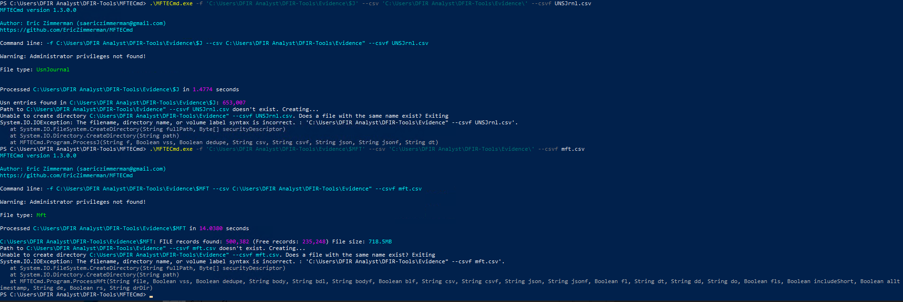
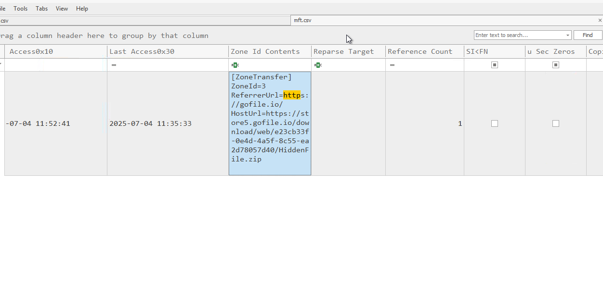
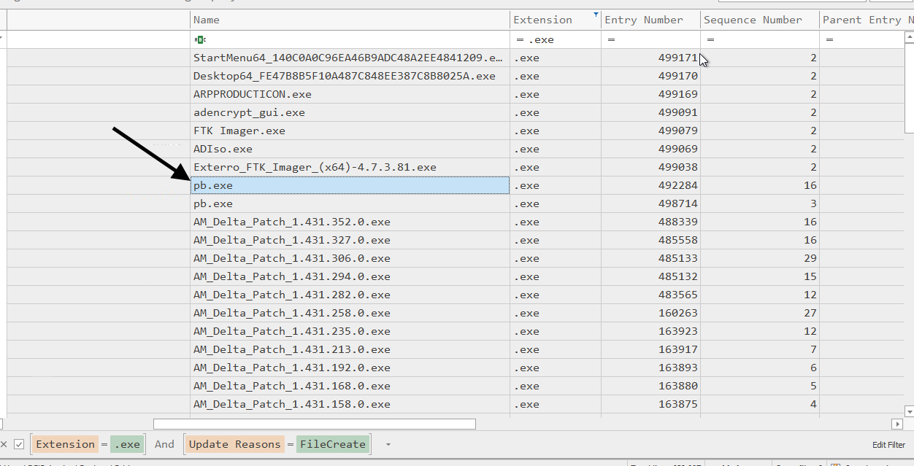
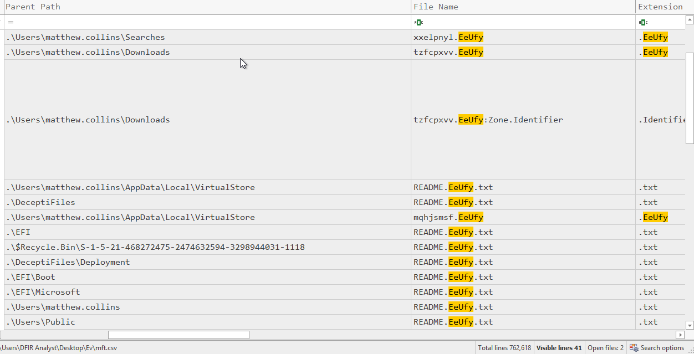
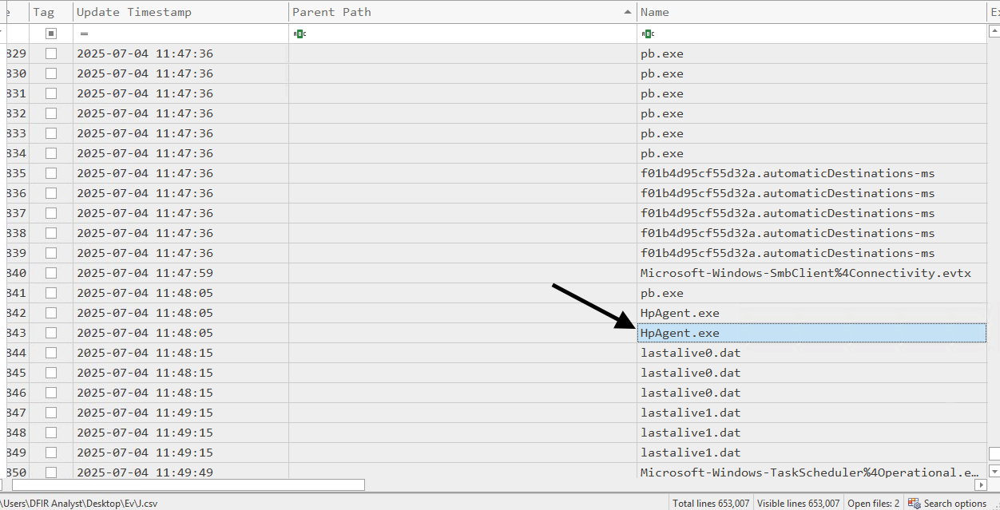
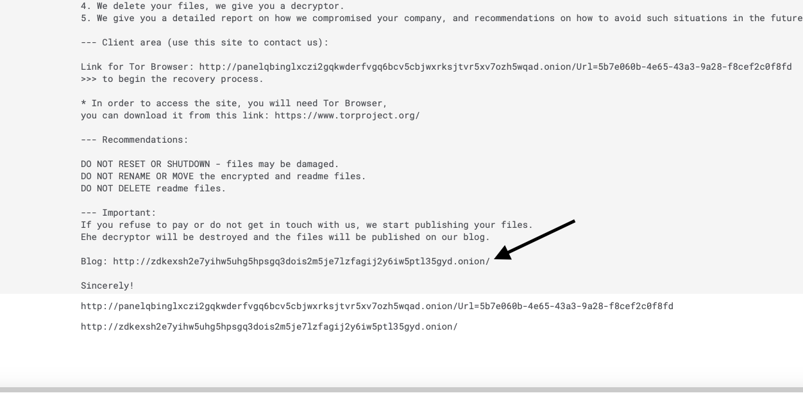

Task 5 File System
🚨 Security Alert: Ransomware Detonation
Trigger: Widespread file modification and creation of ransom notes detected across the file system.
Initial Assessment: The attacker successfully downloaded a payload, renamed it to evade detection, and executed a crypto-ransomware strain that appended a unique extension to victim files.
Investigation Goal: Identify the delivery URL, the specific malware executable, and the threat actor responsible.
📥 Phase 1: Delivery & Download
We started by parsing the $MFT (Master File Table) using MFTECmd to find evidence of file downloads. The Zone.Identifier Alternate Data Stream (ADS) often contains the source URL of downloaded files.
Action: Processing the MFT to extract metadata about recently created files.

Question: What is the full URL from which the ransomware was downloaded to the system?
Evidence: The Zone.Identifier contents for a suspicious zip file reveal it was downloaded from a file-sharing site.

Answer: https://store5.gofile.io/download/web/e23cb33f-0e4d-4a5f-8c55-ea2d78057d40/HiddenFile.zip
🎭 Phase 2: Payload Identification
After downloading the archive, the attacker extracted and renamed the executable to blend in. We used timeline analysis to find the original filename.
Action: Analyzing the creation events in the download directory.

Question: What was the original file name of the ransomware executable downloaded to the host?
Evidence: The file timeline shows the creation of pb.exe immediately following the download.
Answer: pb.exe
⚙️ Phase 3: Execution & Encryption
The attacker did not run pb.exe directly for the encryption phase. Instead, they utilized another executable to perform the actual locking of files.
Action: Correlating the timestamp of file encryption with running processes.

Question: Which executable file initiated the encryption process on the system?
Evidence: The timeline shows HpAgent.exe active exactly when the files began to be modified.
Answer: HpAgent.exe
🔒 Phase 4: Impact Analysis
We examined the file system to determine the scope of the damage and the specific indicators of compromise (IOCs).
Action: Listing files in the user's directory revealed the extension appended by the malware.

Question: What file extension was appended to the encrypted files?
Evidence: All user files have been renamed with the .EeUfy extension.
Answer: EeUfy
🏴☠️ Phase 5: Attribution
Finally, we analyzed the ransom note left behind to identify the threat actor.
Action: Opening the README.txt file found in the encrypted directories.

Question: Go beyond the obvious - which ransomware group targeted the organisation?
Evidence: The onion URL and the specific formatting of the note are characteristic of the BlackLock ransomware group.
Answer: BlackLock
🛡️ Case Verdict
- Group: BlackLock
- Payload: HpAgent.exe (renamed/injected)
- Extension: .EeUfy
- Delivery: Gofile.io (Manual Download)